Quick start: If you are proficient in chess and want a quick introduction to Persian Chess, visit the Play! page and select the “Celtic Citadel” sub-variant.
To play Persian Chess, you must be familiar with standard chess. All FIDE rules, including castling, en passant, the fifty-move rule, check and checkmate, promotion, and under-promotion, apply here. If you are unfamiliar with FIDE chess rules, refer to this page for detailed explanations. Without understanding these basics, you cannot play Persian Chess, as it builds upon standard chess fundamentals.
The special rules of Persian Chess are split into two sections: basic rules and sub-variant rules. Basic rules apply to all sub-variants, while there are currently four sub-variants defined:
1- Celtic Citadel
2- Persian Princess
3- Egyptian Eye
4- Experimental sub-variant: Oriental Omega
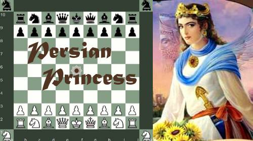
The sub-variants Persian Princess, Egyptian Eye, and Oriental Omega have their own specific rules. However, Celtic Citadel is played using only the basic rules, making it the core sub-variant and ideal for beginners.
Egyptian Eye introduces a unique, neutral piece that attacks both players simultaneously, making it the most complex sub-variant.
Basic Rules (Applicable to All Sub-variants)
Two compound (fairy) pieces are added to the game:
Princess
(White Princess at g2, Black Princess at g10) — Moves like both a Bishop and a Knight.
Princess movement is shown below:
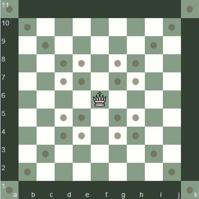
Fortress
(White Fortress at a1, k1; Black Fortress at a11, k11) — Moves like both a Rook and a Knight.
Fortress movement is shown below:
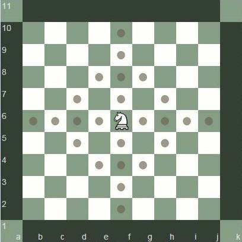
Castling Rules
Standard FIDE castling rules apply. If the king has moved, is in check, or the castling squares are attacked, castling is not allowed.
Princess-side Castling (Long Castle: King moves 3 squares)
White: King to i2 → Rook to h2
Black: King to i10 → Rook to h10
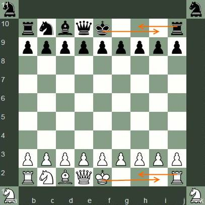
Queen-side Castling (Short Castle: King moves 2 squares)
White: King to d2 → Rook to e2
Black: King to d10 → Rook to e10
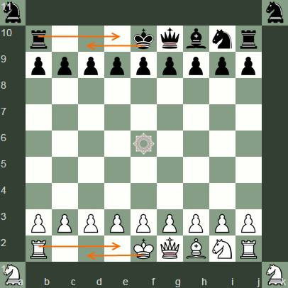
Citadel Draw Rule
If a king moves to an opponent's Citadel square (a11, k11 for White; a1, k1 for Black), the game ends in a draw, regardless of material or position. This historical rule has been preserved in Persian Chess.
Sub-variant Rules for Celtic Citadel
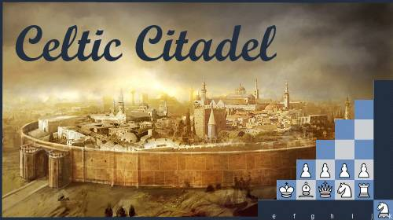
Celtic Citadel uses only the basic rules and is the simplest sub-variant. Its starting position is shown below:
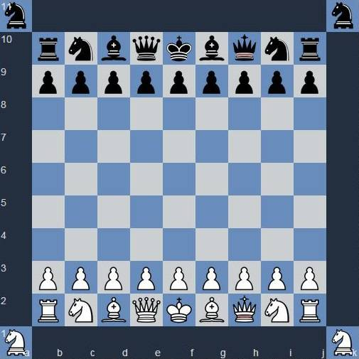
Sub-variant Rules for Persian Princess
The starting position differs from Celtic Citadel. It features two dark-squared bishops, which can change through the “Rendezvous” rule:
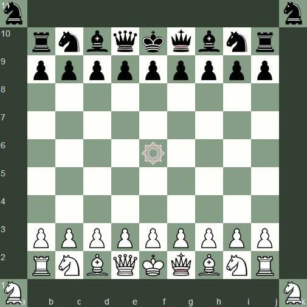
Rendezvous
If the Princess moves from its home square (g2/g10) to h2/h10, and a friendly bishop occupies that square, they switch places. This transforms a dark-squared bishop into a light-squared bishop. This maneuver can be performed once per game by each player.
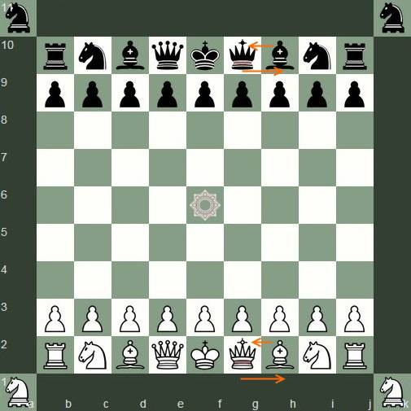
Sub-variant Rules for Egyptian Eye
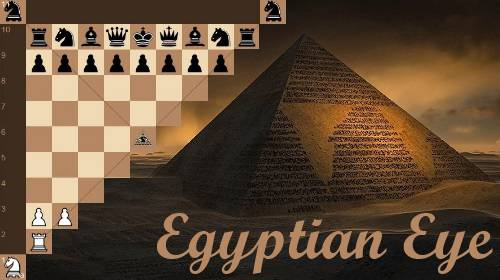
The start position is similar to Persian Princess, with the addition of ASE (All Seeing Eye) at the center (f6). ASE attacks both players simultaneously along the diagonals but does not move.
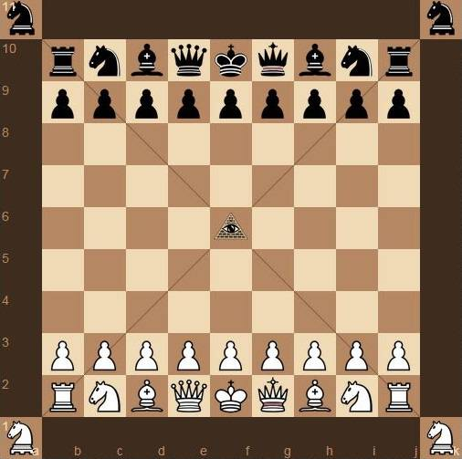
Experimental Sub-variant: Oriental Omega
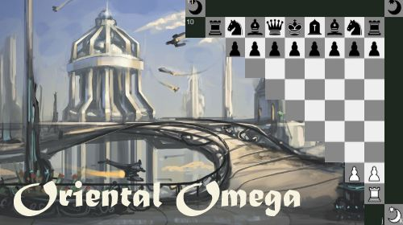
This sub-variant adds two new pieces inspired by Omega Chess: Champion and Wizard. The starting position is shown below:
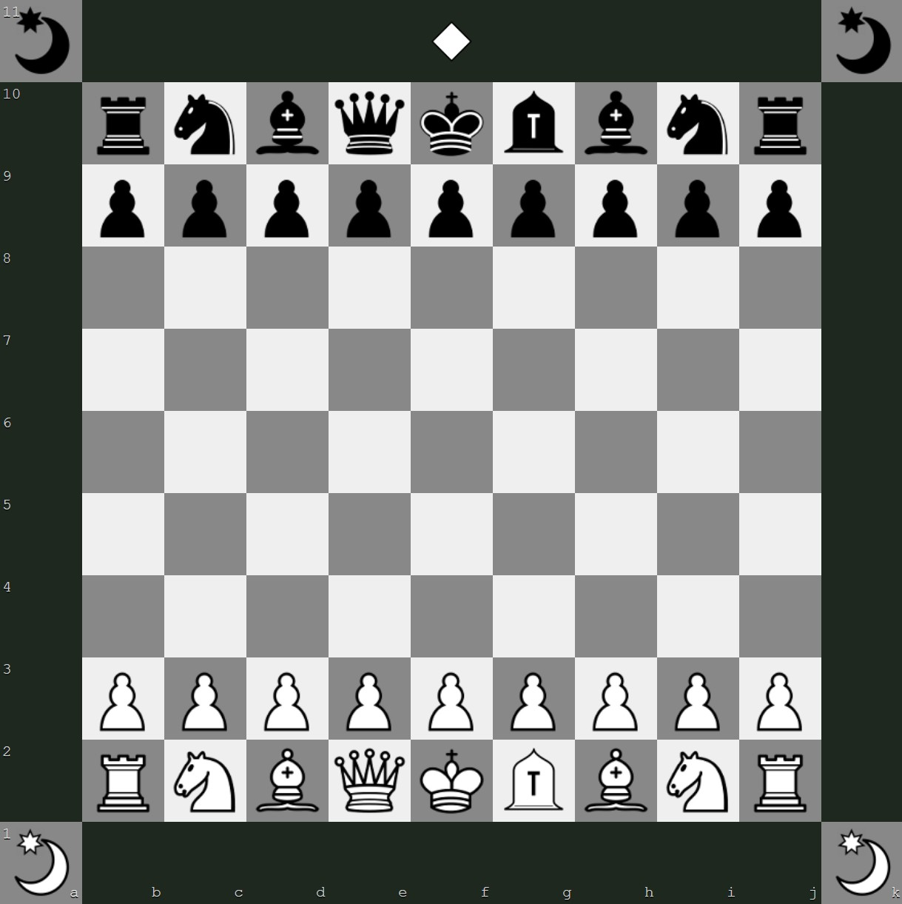
Champion
(White Champion at g2, Black Champion at g10) — Movement is shown below:
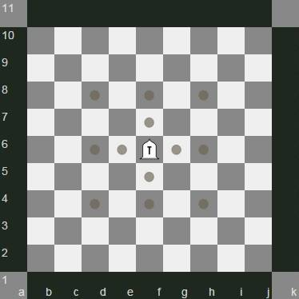
Wizard
(White Wizards at a1, k1; Black Wizards at a11, k11) — Movement differs slightly from Omega Chess and is depicted below:
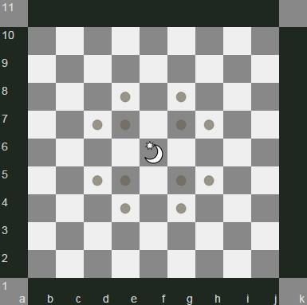
Rendezvous
The Rendezvous rule from Persian Princess also applies here: Champions may switch places with bishops, changing their color square.